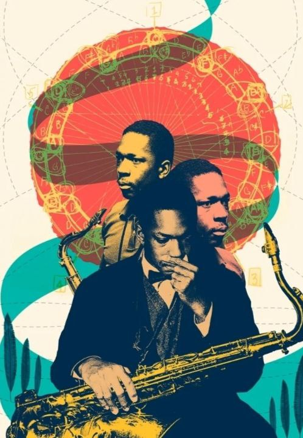
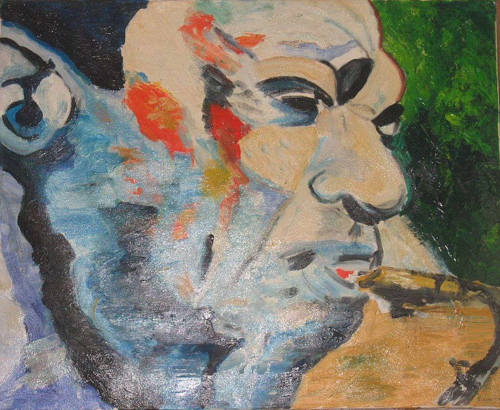

-
1. Принцип Диалога
Мы отказываемся от догм и абсолютных истин в музыке. Каждое мнение, стиль, направление заслуживает быть услышанным и рассмотренным. Мы не настаиваем на своей исключительной правоте, создавая пространство для уважительного обмена идеями и творческого спора.
-
2. Демократия Творчества
Союз — открытая платформа для всех, кто разделяет наши принципы, вне зависимости от возраста, опыта, школы или жанровых предпочтений. Приветствуется разнообразие: от традиционного джаза до авангарда, фри-джаза, contemporary, джаз-рока, фьюжн, и их взаимодействия с электроникой, хип-хопом, R&B, роком, попом, академической музыкой.
-
3. Авторитет Профессионализма
Демократия не означает вседозволенность. Мы признаем авторитет мастерства, глубины знаний, дисциплины и профессиональной этики. Структура управления Союза сочетает коллегиальность в обсуждениях с эффективной исполнительной властью, ответственной за реализацию решений и проектов.
-
4. Свобода Эксперимента
Мы считаем необходимым активно расширять пространство для свободного, экспериментального и глубокого искусства (фри-джаз, авангард, импровизационная музыка). Поддержка поиска и риска — основа развития джаза.
-
5. Ориентация на Будущее
Привлечение и воспитание новой аудитории — наш приоритет. Мы открыты к современным форматам, технологиям и кросс-культурным проектам, делая джаз актуальным и доступным для молодежи.
-
6. Равенство Основ
Андерграунд, независимая сцена, авторские проекты — равноправная и жизненно важная часть музыкальной экосистемы. Мы обеспечиваем им видимость и доступ к ресурсам наравне с признанными формами.
-
7. Единство через Музыку
Мы стремимся объединить музыкантов и слушателей Санкт-Петербурга, Северо-Запада России и всего мира, преодолевая разобщенность и создавая точки соприкосновения через общую страсть к импровизации и творческой свободе.
-
 8. Образование как Основа
8. Образование как ОсноваМы обязуемся развивать и поддерживать высококачественное джазовое образование всех уровней — от начинающих до профессионалов, — как основу для будущего сцены.
-
9. Уважение к Наследию
Мы чтим историю джаза, его великих мастеров и традиции Петербургской джазовой школы, видя в них источник вдохновения и фундамент для движения вперед.
-
10. Служение Музыке и Городу
Наша деятельность — служение искусству джаза и культурному процветанию Санкт-Петербурга. Мы работаем на благо сообщества и города.